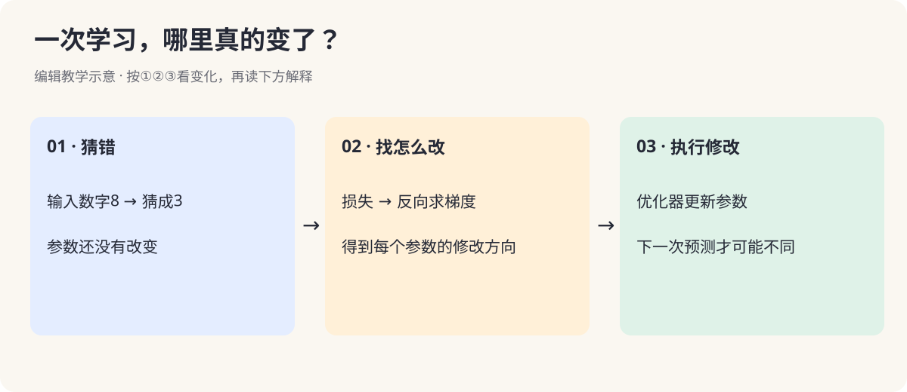

第1章 · 模型全貌与训练闭环
本章开篇生活情境与衔接为编辑教学改写，借鉴原视频从经历引出概念的讲解方法，不是作者原话；原视频线索与论文见下方对应段落。
先看一件具体的事
为什么懂了那么多，下次还是一样？

一次学习，哪里真的变了？ · 点击可放大先看这个场景
你有没有过这样的时刻：一件事结束后，复盘得很清楚。哪里看错了，哪里该拒绝，下一次应该怎么做，你都能说出来。可真正遇到相似的场面，自己还是沿着旧路走了一遍。
问题出在哪里
先借这个困惑认识模型。给一个刚开始训练的神经网络看手写数字“8”，它可能十分自信地回答“3”。我们把正确答案告诉它，它就学会了吗？还没有。知道这次错了，只是学习的起点。
模型怎样处理
把过程放慢。第一步，模型按现在的参数给出预测，这叫前向传播。第二步，把预测和答案放在一起，算出错得有多远，这个数字叫损失。第三步，沿着刚才的计算倒着追问：哪些参数稍微改变，能让这次错误变小？这一步叫反向传播。最后，优化器真的把参数改一点。下一次预测，才有机会不同。
再看一个变化
这里最容易混的是最后两步。算出“该往哪改”，和已经改了，是两回事。你可以把梯度看成修改建议，把参数更新看成执行修改。模型不会因为屏幕上出现了一个很大的损失，就自动变好；必须让反馈进入更新过程。
放回完整流程
换成语言模型也一样，只是题目变了。它看到“今天的天气很”，要给接下来的候选token打分。训练文本里实际出现的下一个token提供目标；模型一次次预测、比较、计算梯度、更新参数。聊天时生成一句话，通常只走预测这一段，并不会在每次回答后立刻把自己重新训练一遍。
回到开头
回到开头的经历，这个类比只帮我们记住学习的环节：反馈需要接到可执行的变化。它并不意味着人的成长可以直接写成梯度公式。接下来我们先让一个很小的模型真的改一次，再看它的预测是否改变。
这一章怎么读先带着上面的问题往下看。每个概念先用白话接上情境，再给计算；遇到公式可以先看旁边的例子。动手实验和答案直接展开，论文留在相应概念后，想追根究底时再点开。
先动手试一试 →  整条学习主线：训练怎样改变参数，生成怎样接续token · 点击打开大图
整条学习主线：训练怎样改变参数，生成怎样接续token · 点击打开大图1.1 带着问题进入模型
我们先沿着“预测→比较→求梯度→更新”走一遍。后面的章节会把每一站放大，这一章先看它们怎样接成一次真正的学习。
1.2 神经网络与训练闭环
先让这个“8”走完一次学习：猜成“3”只是输出，发现错了只是反馈。下面把四个环节拆开，你要找的是：哪一步开始改参数，哪一步还只是在算。
模型是带有许多可调参数的函数。输入经过线性运算与非线性激活得到预测；训练让这个函数逐步适应数据。
把刚才的直觉一步步算出来
从一个神经元算起：输入x=2，权重w=0.5，偏置b=−0.2，激活ReLU(z)=max(0,z)。先算z=wx+b=0.8，再得输出0.8。多层网络只是把多个这样的变换按结构组合。
若目标y=1，以平方误差L=(ŷ−y)²，当前损失为0.04。此时ReLU导数为1，因此∂L/∂w=2(0.8−1)×2=−0.8。学习率0.1时w从0.5更新到0.58；若偏置也训练，b从−0.2更新到−0.16。新输出为1.0，损失降至0。这个一次命中的例子来自特意选择的简单数值，不代表真实网络一次就学会。
链式法则把输出误差传回前层。前向传播使用参数做预测，反向传播计算参数梯度，优化器消费梯度更新参数。LLM中参数量和结构更复杂，但职责分工仍可按此区分。
换你试一次：先猜，再算
只更新w、保持b=−0.2，更新后输出和损失是多少？
参考答案与计算结果
w=0.58时ŷ=0.96，L=0.0016；与同时更新偏置的结果不同。
这个类比帮到哪里，停在哪里
识别手写数字只是示例；迁移到语言模型时，输入变成 token，输出变成候选 token 分布。
关联视频 · 已取得完整音轨并完成本机自动转写；本节综合转写与页面摘要改写，术语和个别片段尚未逐秒校对。
动手看看：只改一个条件，会发生什么？
先把输入固定，只改一个权重。你猜输出会往目标靠近，还是离目标更远？调完后把预测和损失一起看：参数改变是动作，损失变化是这次动作的结果。
想亲手复现，就运行这段小实验
本例是编辑编写的教学计算，不是作者实验的代码复刻。先把 common.py 与本章脚本下载到同一个目录，再执行 python3 01_pipeline.py。只使用Python标准库。
from common import VOCAB, weather_hidden, decode, softmax
import math
ids = [VOCAB.index(t) for t in ['今天', '天气']]
h = weather_hidden()
weights = [[0.]*5 for _ in range(2)]
p = softmax(decode(h, weights))
print('input IDs:', ids)
print('hidden:', [round(v,6) for v in h])
print('probabilities:', p)
print('target:', VOCAB[2], 'loss:', round(-math.log(p[2]),6))
实际运行输出
input IDs: [0, 1]
hidden: [0.330238, 1.669762]
probabilities: [0.2, 0.2, 0.2, 0.2, 0.2]
target: 很 loss: 1.609438
先不急着读完每一行代码。找到输入、这次改变的量和最后输出，按上面的例子预测一次，再运行核对。若结果和直觉不同，打印中间值，看看差异从哪一步开始。
回到开头，你能解释了吗？
模型这次猜错后，究竟是哪一步真正改变了它？
如果只是打开一个训练好的聊天模型问问题，参数一定会跟着你的反馈更新吗？
用自己的话讲给一个没读过这一章的人听。能把问题、过程和结果接起来，再看公式就会容易一些。